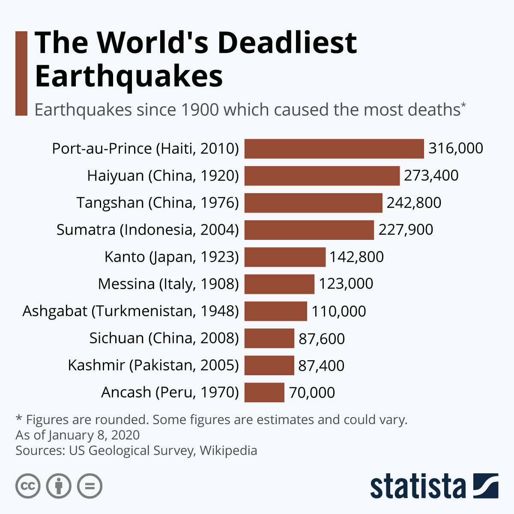
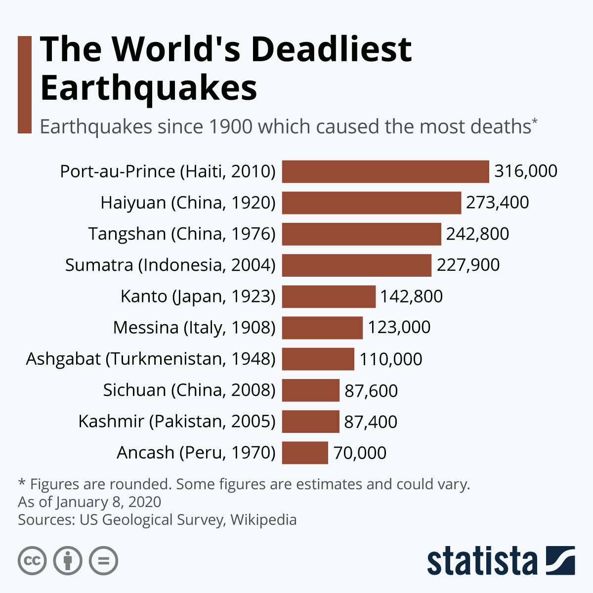

Mission Statement
We are an organization that will provide resources to the affected residents of Haiti in order to keep them on their feet by providing food and shelter until larger international organizations can provide their assistance. Together with your help we can gather the resources needed to help. With the cooperation of the residents of Haiti, we are going to provide the resources they require. No affected citizen will be left out.
Map
History/vulnerability of haiti
Haiti has suffered many natural disasters over the past 5 centries. ranging any where from Earthquakes, storms, hurricanes and much More. Even before the quake Haiti was the poorest country in the western hemisphere, had weak infrastructures, unstable government. Due to this reason, Haiti
Why was it so destructive?
- Poor Infrastructure
- Close to the surface of the earth
- Developing Country
- Recovering from a storm and 3 hurracanes from 2008
 

Statistics/Facts
- 3,000,000 People Affected
- 5,000,000 People Displaced
- 250,000 Estimated Deaths
- 300,000 Injured